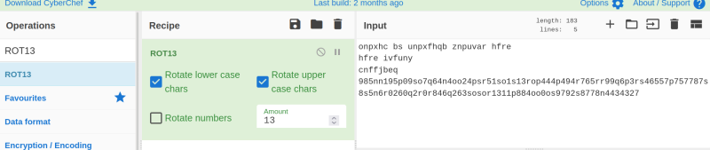

4.3.2 Deciphering hash with Cyberchef
In the text you can see some words which are kind of jumbled. However, in any encryption or hashing techniques, we don’t see distinct words like these.
You can use Cyberchef in order to decipher the hash using caeser cipher (ROT13). In ROT13, the characters are rotated 13 characters ahead. That is to say, ‘a’ become ‘n’, ‘b’ becomes ‘o’ and so on. To do that, I dragged the ROT13 operation to my recipe and checked the result.
1. Search “ROT13”.
2. Double-click the “ROT13” option.

3. Copy your hash in the “Input” panel.

4. You'll see the decoded hash in the “Output” panel.
So, the vishal's hashed password is:
“985aa195c09fb7d64a4bb24cfe51fb1f13ebc444c494e765ee99d6c3ef46557c757787f8f5a6e0260d2e0e846d263fbfbe1311c884bb0bf9792f8778a4434327”
5. Crack it using https://crackstation.net/.
The password is “hacker”.